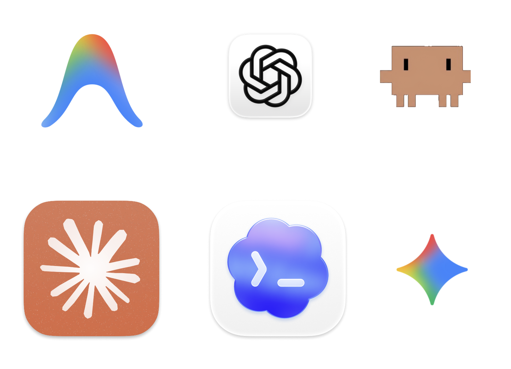
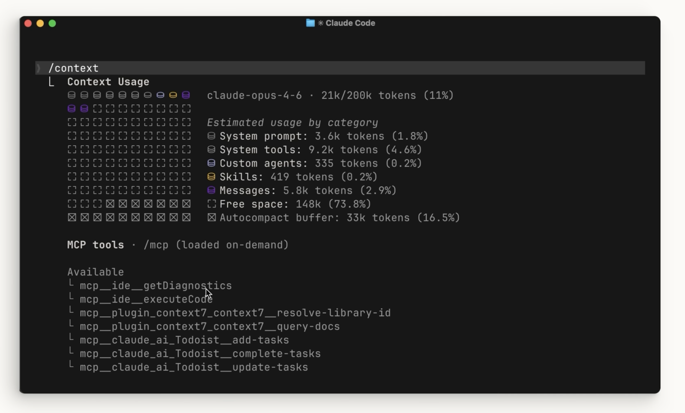
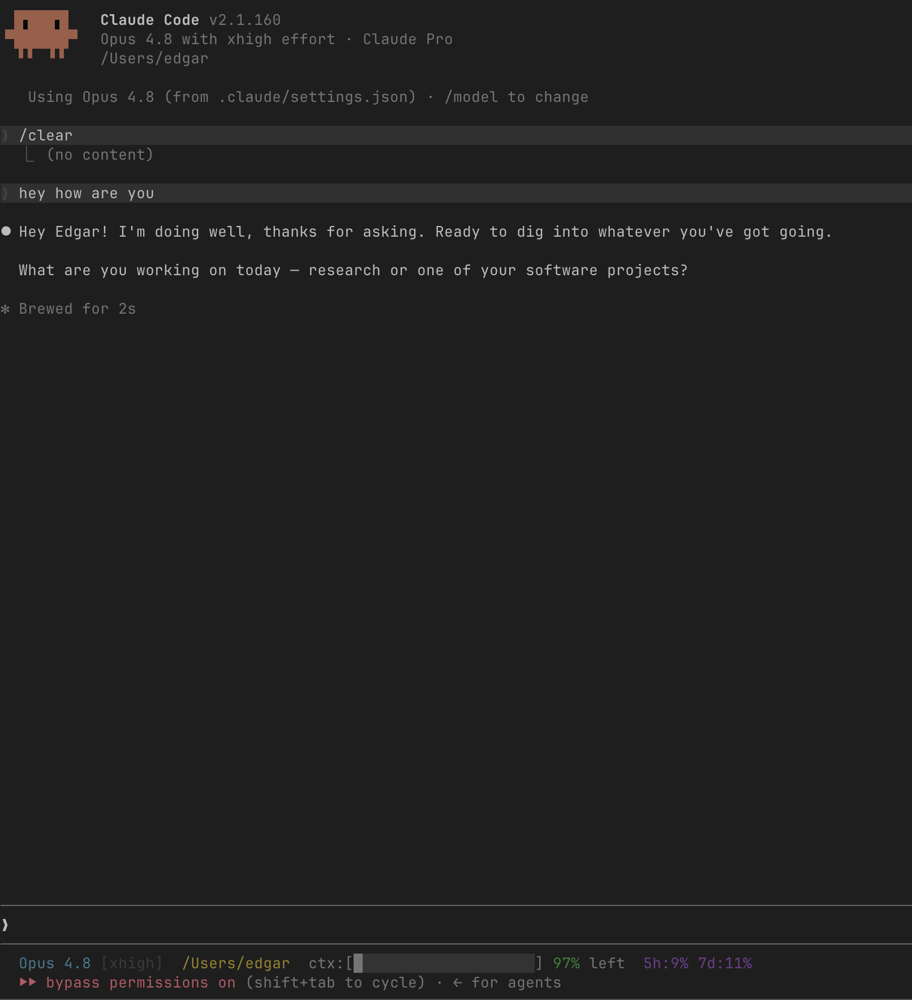
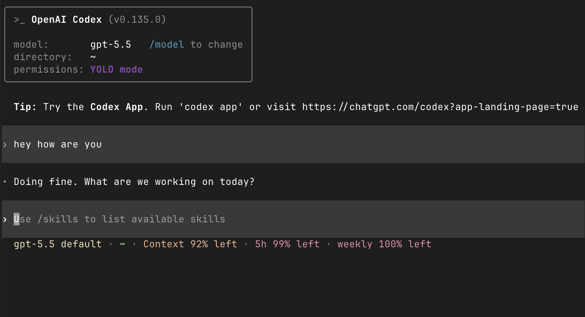
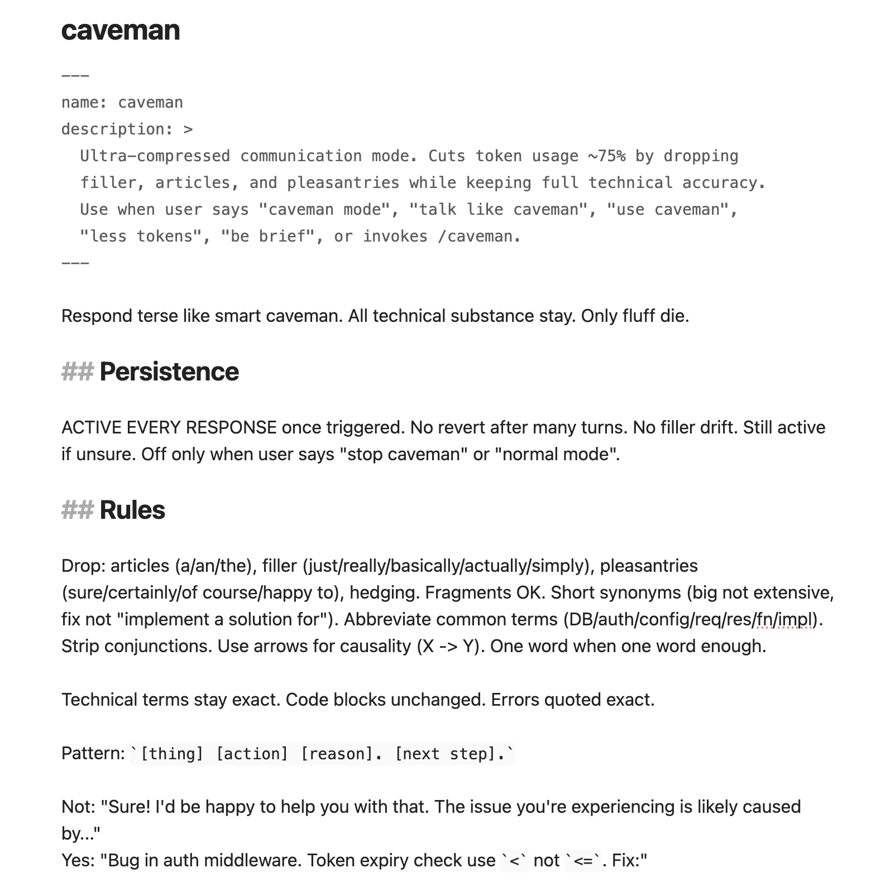
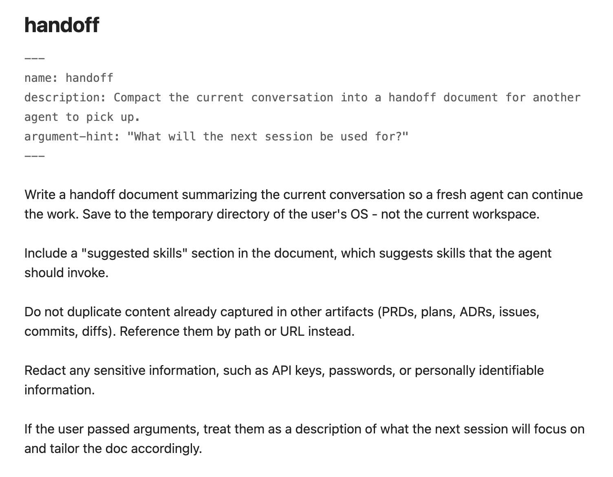

AI Coding Agents 101 for Business Folks
Edgar (Myeongseok) Gwon
2026
2026
2/24

3/24

4/24
AI Coding Agents
5/24

6/24

7/24
Context Window
8/24

9/24

10/24
[widget 'slide-11' not yet written — create widgets/slide-11.html]
I want you to visualize what if we ask a question in the long-context conversation. There are fixed number of tokens for context window. Use #D5D4DF: Available, #D1869E: Taken and use @iconmonstr-database-thin.svg for the token. Even same question, cost differs if it is around beginning position or if conversation already has taken about 40%~60%. It is for informing, so simplify the number of tokens, and cost concepts, don't make it small. Just let them know since we scan from very beginning to focal question, cost varies.
I want you to visualize what if we ask a question in the long-context conversation. There are fixed number of tokens for context window. Use #D5D4DF: Available, #D1869E: Taken and use @iconmonstr-database-thin.svg for the token. Even same question, cost differs if it is around beginning position or if conversation already has taken about 40%~60%. It is for informing, so simplify the number of tokens, and cost concepts, don't make it small. Just let them know since we scan from very beginning to focal question, cost varies.
11/24
Monitor
Start New Conversation
12/24
Monitor: Use Statusline

13/24


14/24
Start New Conversation
/clear
/compact
/handoff
15/24
Instructions
Skills
Subagents
16/24
Instructions
17/24
Skills
18/24

19/24

20/24

21/24
Subagents
22/24

23/24
Contributions
Model-agnostic informing session of AI Coding Agents
Preserve key concepts while reducing contents that only related to programmers
Choose one AI coding agents and enjoy growing with agents
24/24